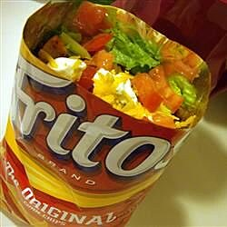

!DOCTYPE html>
Document
Home
Taco In a Bag

Description:
This recipe is a delicous way to make some classic taco in a bag .
Taco in a bag is a great food on the go! You can have it while walking at a festiavl, concert, as a picnic snack. And it's delicous!
Ingredients
- 1 pound lean ground beef
- 1 package taco seasoning mix
- 4 packages of corn chips
- 2 cups shredded lettuce
- 1 chopped fresh tomato
- 1 cup shredded Cheddar cheese
- A third cup of salsa
- .5 cup sour cream
Steps
- Place ground beef in a large skillet. Cook and stir over medium heat until browned. Drain excess oil. Mix in the taco seasoning and prepare according to the directions on the package.
- With the bags unopened, gently crush the corn chips. Snip the corners off the bags using scissors and slit open the bags along the side edge. Spoon equal amounts of the beef mixture, lettuce, tomato, Cheddar cheese, salsa and sour cream into the bags on top of the crushed chips. Serve in the bag and eat using a fork.